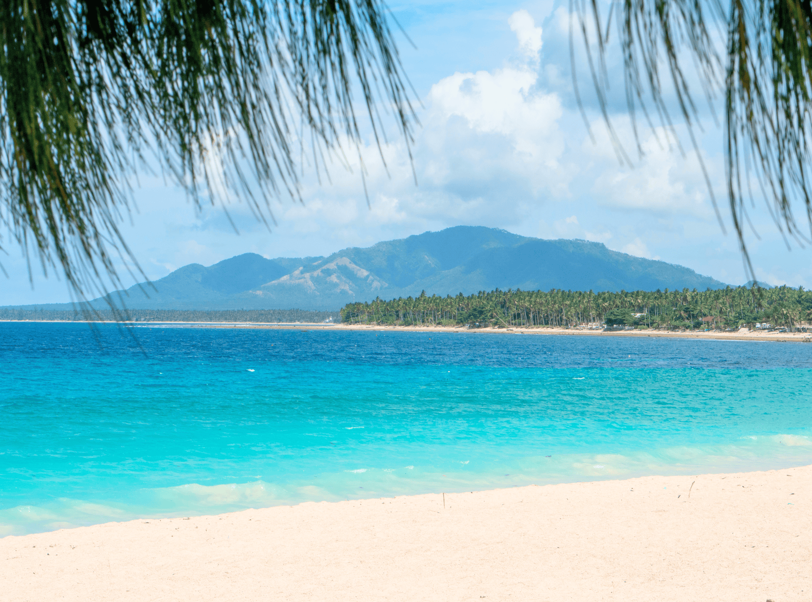
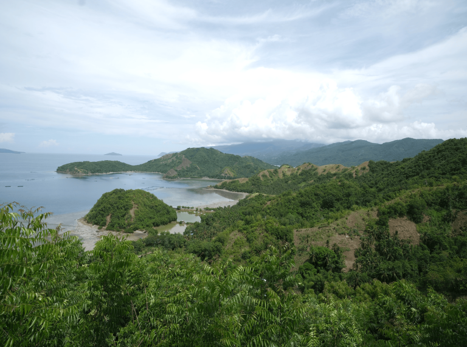
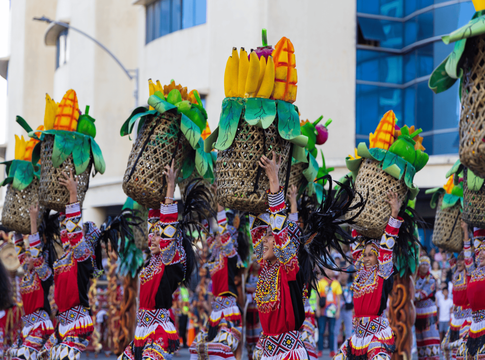
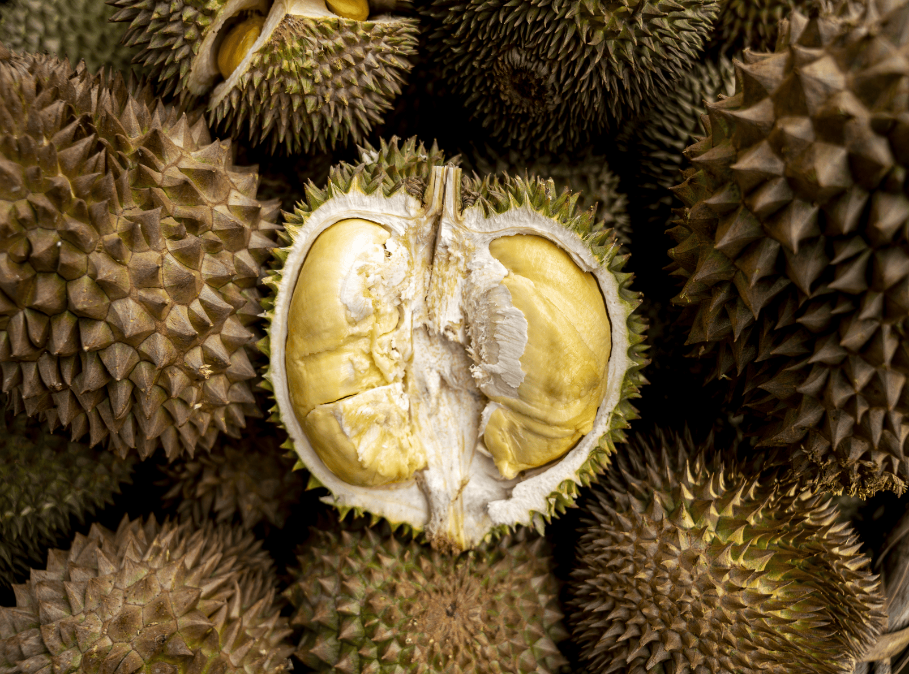
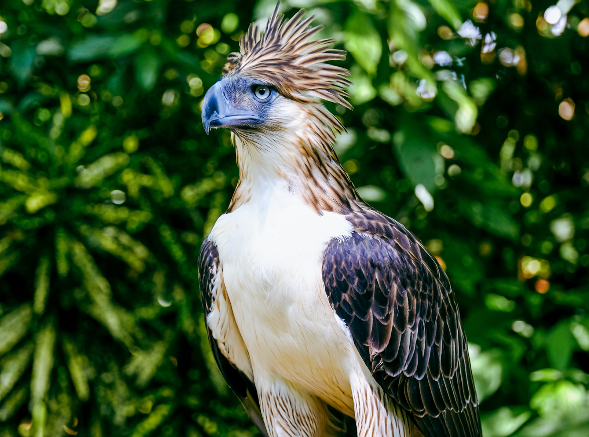
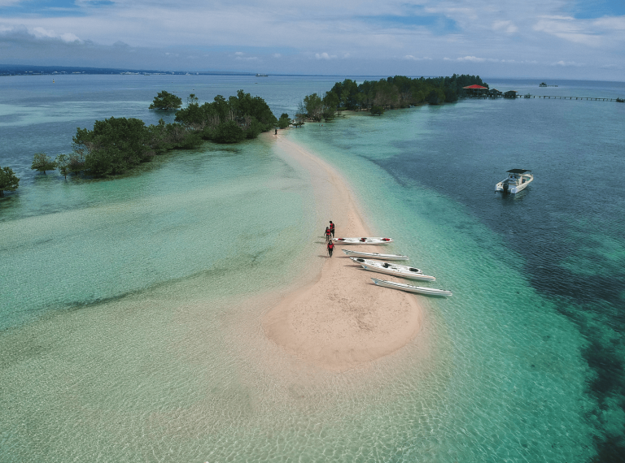
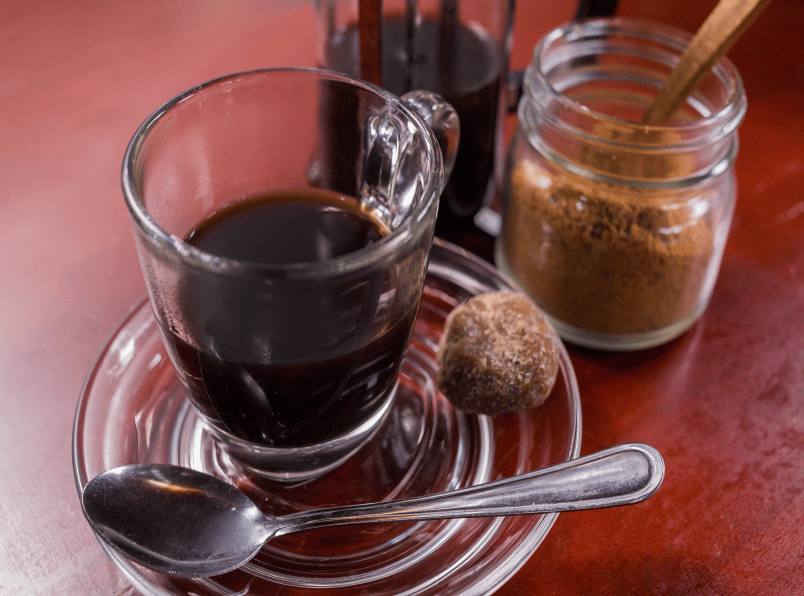

Activities & Experiences
Discover exciting adventures, rich traditions, and unforgettable experiences in Davao.


Adventure & Outdoor Activities
Experience the natural beauty of Davao through exciting outdoor adventures and breathtaking scenery.
- Hiking and mountain trekking at Mount Apo and Mt. Hamiguitan.
- Exploring waterfalls and natural swimming areas.
- Enjoying nature walks and forest trails.
- Discovering scenic viewpoints and landscapes.
- Experiencing outdoor adventures with local guides.

Culture & Traditions
Learn about Davao's diverse communities, cultural heritage, and traditions through meaningful experiences.
- Learning about the traditions of Indigenous peoples.
- Exploring local museums and cultural exhibits.
- Attending the Kadayawan Festival.
- Discovering traditional crafts and local artistry.
- Learning about Davao's history and heritage.

Food & Local Cuisine
Explore Davao's food scene, from fresh tropical fruits to local specialties and traditional Filipino dishes.
- Tasting fresh durian and other tropical fruits.
- Trying local dishes and regional specialties.
- Exploring public markets and food stalls.
- Sampling locally produced chocolate and cacao products.
- Enjoying Davao's restaurants and cafés.

Nature & Wildlife
Discover Davao's biodiversity through its gardens, conservation attractions, and beautiful natural areas.
- Visiting the Philippine Eagle Center.
- Exploring botanical gardens and nature parks.
- Learning about wildlife conservation.
- Visiting Malagos Garden Resort.
- Appreciating Davao's native plants and wildlife.

Beaches & Island Experiences
Enjoy coastal scenery, island adventures, and relaxing seaside experiences around Davao and nearby destinations.
- Going island hopping around Samal Island.
- Swimming and relaxing at local beaches.
- Enjoying coastal photography and sightseeing.
- Exploring marine environments responsibly.
- Watching the sunset along the coast.

Shopping & Local Products
Discover local crafts, regional delicacies, and products that showcase Davao's creativity and identity.
- Buying locally produced cacao and chocolate.
- Shopping for handcrafted souvenirs.
- Exploring local markets and shopping centers.
- Discovering products made by local businesses.
- Finding souvenirs inspired by Davao's culture.